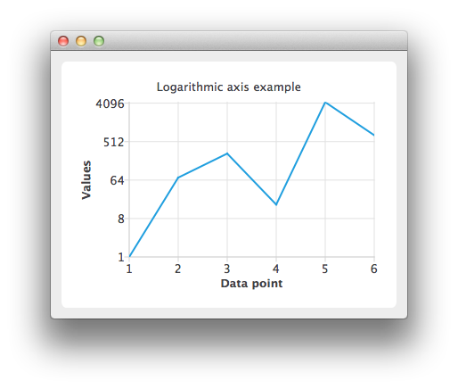

Logarithmic Axis Example

Running the Example
To run the example from Qt Creator, open the Welcome mode and select the example from Examples. For more information, visit Building and Running an Example.
Using Logarithmic Value Axes
Create a QLineSeries instance and add some data to it.
QLineSeries *series = new QLineSeries(); *series << QPointF(1, 1) << QPointF(2, 73) << QPointF(3, 268) << QPointF(4, 17) << QPointF(5, 4325) << QPointF(6, 723);
To present the data on the chart we need a QChart instance. Add the series to it, hide the legend and set the title of the chart.
QChart *chart = new QChart(); chart->addSeries(series); chart->legend()->hide(); chart->setTitle("Logarithmic axis example");
Create the axes. Add them to the chart and attach to the series.
QValueAxis *axisX = new QValueAxis; axisX->setTitleText("Data point"); axisX->setTickCount(6); axisX->setLabelFormat("%i"); chart->addAxis(axisX, Qt::AlignBottom); series->attachAxis(axisX); QLogValueAxis *axisY = new QLogValueAxis; axisY->setLabelFormat("%g"); axisY->setTitleText("Values"); axisY->setBase(8); chart->addAxis(axisY, Qt::AlignLeft); series->attachAxis(axisY);
Then create a QChartView object with QChart as a parameter. Enable antialiasing to have the rendered line look nicer.
QChartView *chartView = new QChartView(chart); chartView->setRenderHint(QPainter::Antialiasing);
The chart is ready to be shown.
QMainWindow window; window.setCentralWidget(chartView); window.resize(400, 300); window.show();
Files: